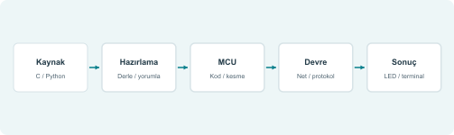
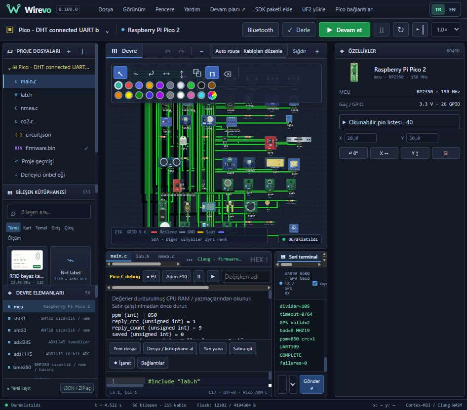
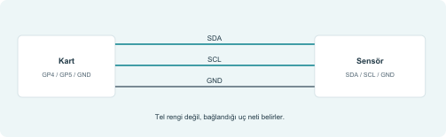
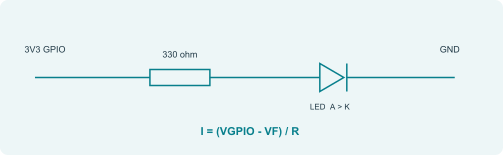
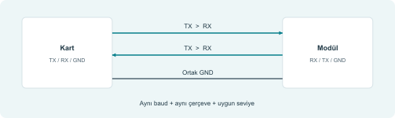
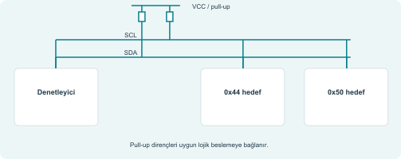
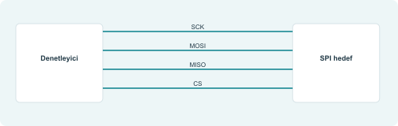
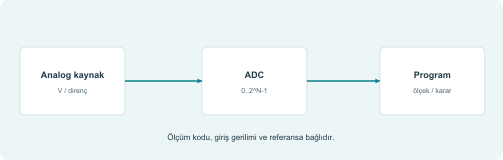
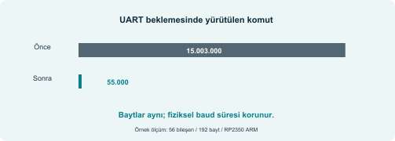
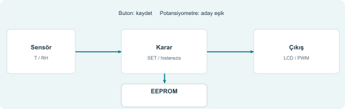

01 Wirevo ne yapar?
Wirevo, devre bağlantısını ve programı aynı çalışma alanında birleştiren bir tarayıcı uygulamasıdır. Kod derlenir veya seçilen Python motorunda yorumlanır; kart modeli pin durumlarını üretir. Elektriksel çözüm ve bileşen modelleri bu pinlere cevap verir. Ekrandaki LED, sensör ve terminal sonuçları bu döngüden gelir.

| Katman | Görevi |
|---|---|
| Editör / proje | Kaynaklar, devre ve ayarlar birlikte tutulur. |
| Derleyici / yorumlayıcı | Seçilen kart ve dile uygun yürütülebilir çıktı hazırlanır. |
| MCU motoru | Program, yazmaçlar, kesmeler ve pin işlemleri yürütülür. |
| Devre / bileşen | Net gerilimleri, akımlar ve protokol cevapları hesaplanır. |
| Görünüm / ölçüm | Sonuçlar ekrana, seri terminale ve ölçüm araçlarına taşınır. |
02 Hızlı teknik özet
| Başlık | Bu sürümdeki karşılığı |
|---|---|
| Sürüm / belge | 0.110.0 / Kullanım ve uygulama referansı, Rev. A |
| Çalışma biçimi | Masaüstü tarayıcı, WebAssembly; yerel SDK yardımcısı gerekmez. |
| Kart profilleri | 38 profil: 6 AVR, 14 ESP32, 9 STM32, 1 TM4C123, 8 Pico. |
| Bileşen tanımları | 126 ortak katalog tanımı; kartlar ve görünür filtreler ayrıca değerlendirilir. |
| Diller | Kartına göre Arduino C++, C17, C++17 veya MicroPython. |
| Proje düzeni | Çoklu kaynak dosyası, devre, ayarlar; JSON / ZIP dışa aktarma. |
| Derleme | Kart/dile özgü tarayıcı araçları; tüm masaüstü SDK’lar değildir. |
| Giriş / çıkış | GPIO, ADC/PWM ve desteklenen sensör / haberleşme modelleri. |
| Debug | Uygun derlenmiş C profillerinde breakpoint, satır adımı, sınırlı değişken izleme. |
| Depolama | Bu tarayıcıya ait yerel kayıt; taşınabilir yedek JSON / ZIP. |
| Pico hedefi | Eğitim ve sensör projeleri; tam silikon/CPU çevrim emülasyonu hedeflenmez. |
Katalog sayısı; dil, kart ve her kullanım biçimi için bir uyumluluk sertifikası değildir. Bir modülün görünmesi ile kullanılan sürücünün derlenmesi ve doğru protokol/pin eşlemesi ayrı aşamalardır.
03 Arayüzü tanıma

| Bölge | Nasıl kullanılır? |
|---|---|
| Sol | Proje dosyaları, bileşen araması ve devre elemanları. |
| Orta üst | Devre yerleşimi, kablolar, seçme, yakınlaştırma. |
| Orta alt | Kaynak sekmeleri, kod editörü ve C debug denetimleri. |
| Sağ | Seçili elemanın özellikleri; değer, pin listesi, konum. |
| Terminal / alt bilgi | Derleme, seri çıktı, Bus/Debug/Sorunlar; sanal zaman ve kart durumu. |
Pencere düzeni taşınabilir. Görünüm düzeni sıfırlar; Pencere bölümleri yönetir. TR/EN seçimi arayüz içindir; kaynak kodu ve pin kimlikleri çevrilmez.
04 İlk projeyi kurma
- Dosya menüsünden yeni proje açın veya Projeler / örnekler listesini kullanın.
- Kart modelini seçin. İşlemci ailesi kadar kartın pin yerleşimi de önemlidir.
- Kartın sunduğu dil seçeneklerinden birini seçin. Tiva C yalnız C17, Pico tarayıcı C profili C17’dir.
- İlk deneme için hazır LED örneğini açın. Yanlış kablo veya sürücü etkisini azaltır.
- Bileşen değerlerini Özellikler’den inceleyin; LED seri direncini koruyun.
- Derle’ye basın. Derleme terminalindeki ilk hatayı düzeltmeden devam etmeyin.
- Çalıştır’a basın; durum ve sanal zaman ilerlemelidir.
- Giriş elemanını değiştirin; programın tepkisini gözleyin.
- Gerekirse duraklatıp ölçüm veya debug yapın.
- JSON veya ZIP indirerek tarayıcı dışına yedek alın.
05 Kablolar, netler ve breadboard

Kabloyu bir pin üzerinde başlatın, istenirse köşe noktaları koyun ve hedef pinde bitirin. Renk, okunabilirlik içindir; kablonun gerilimini veya protokolünü belirlemez. Birbirini görsel olarak kesen yolların gerçekten bağlı olduğunu net/pin seçimiyle kontrol edin.
Breadboard’un bağlı delik grupları elektriksel bağlantı kurar. Uzun güç raylarını ve orta yarığı aynı grup sanmayın. Mıknatıs yerleşimi kolaylaştırır; görünüşte yakın duran bacakların bağlandığı varsayılmaz. Seçili elemanın okunabilir pin listesini kullanın.
| İşlem | Kısayol / araç |
|---|---|
| Kablo / iptal | W / Esc |
| Döndür / sil | R / Delete |
| Geri al / yinele | Ctrl+Z / Ctrl+Shift+Z |
| Çoğalt / kopyala / yapıştır | Ctrl+D / Ctrl+C / Ctrl+V |
| Kaydırma | Boşluk + sürükle veya orta tuş |
| Mıknatıs | M; Alt ile geçici kapatma |
06 Besleme, lojik seviye ve LED

VCC/3V3/5V güç pinidir; GPIO programla değişen sinyaldir. GND ortak referanstır. Bir sensörün beslemesinin 5 V olması, veri çıkışının 3,3 V girişe doğrudan uygun olduğu anlamına gelmez. Modülün veri pini seviyesi ayrıca incelenir.
| Aile / profil | Temel yaklaşım |
|---|---|
| UNO / klasik 5 V AVR | 5 V kart profilleri; analog referans ve modül beslemesi ayrı kontrol edilir. [R1] |
| Pico / ESP32 / Tiva | 3,3 V lojik ile başlayın. Güç başlığındaki 5 V pini GPIO seviyesi değildir. [R2,R3,R4] |
| STM32 | Kart/model/pin özeldir; her pini 5 V toleranslı kabul etmeyin. [R5] |
Örnek: 3,3 V çıkış ve yaklaşık 2,0 V LED ileri gerilimi için 330 ohm direnç yaklaşık (3,3 - 2,0) / 330 = 3,9 mA verir. Bu bir tasarım örneğidir; gerçek LED ve GPIO sınırları ayrıca kontrol edilir.
07 Bileşen seçimi ve parametreler
Bileşen aramasında isim veya işlev arayın. Tümü, Kart, Temel, Giriş, Çıkış ve Ölçüm filtreleri görünür listeyi daraltır. Seçilen kart, kullanılabilecek örnekleri ve dil seçeneklerini etkiler; katalog adı tek başına bir hazır yazılım kütüphanesi kurmaz.
| Tür | Özellik değişikliğinin anlamı |
|---|---|
| Direnç / potansiyometre | Ohm, konum veya bölücü oranı elektriksel çözümü etkiler. |
| Buton / tact | Basılı durum kontakları değiştirir; aktif LOW/HIGH kablolamaya bağlıdır. |
| Sıcaklık / nem / CO2 | Sanal çevre değeri sensör modelinin yanıt baytlarına dönüşür. |
| I2C/SPI modülü | Adres, mod seçimi ve pinler protokolde tutarlı olmalıdır. |
| RFID kartı | UID / sanal kart içeriği, okuyucu modeli ile birlikte değerlendirilir. |
| Ekran | Doğru güç, başlangıç komutları ve veri akışı gerekir. |
Ekrandaki etiketi okuyamıyorsanız elemanı seçin ve pin listesini açın. Uç adı, kodda kullanılan GPIO ve kart başlığındaki fiziksel sıra farklı kavramlardır. Örneğin Tiva J4.1, PF2 olarak adlandırılan GPIO’ya gider.
08 Çok dosyalı program ve kütüphane mantığı
Ana dosya seçilen dile bağlıdır: sketch.ino, main.c, main.cpp veya main.py. Dosya / kütüphane al ile desteklenen ek kaynakları seçin. Bir başlık bildirimi, işlevin gövdesini sağlamaz; derlemeye giren bir kaynak dosyası da gerekir.
// led.h
#pragma once
void led_yaz(int durum);
// led.c - Pico C örneği
#include <pico/stdlib.h>
void led_yaz(int durum) { gpio_put(15, durum); }
// main.c içinde
#include "led.h"
// GPIO15 çıkış olarak kurulduktan sonra:
// led_yaz(1);| Hata | Anlamı |
|---|---|
| Başlık bulunamadı | Dosya seçilmedi, yol yanlış veya include dizini kapsam dışında. |
| undefined symbol | Bildirim var; kaynak/gövde bağlanmadı veya API sağlanmıyor. |
| multiple definition | Aynı gövde birden fazla derleme birimine kondu. |
| Ayrılmış başlık | Uygulamanın verdiği çalışma zamanı başlığının üstüne yazılmaya çalışıldı. |
09 Derle, Çalıştır, Duraklat, Reset
- Kaynak veya kart değiştiğinde yeniden Derle yapın. Eski firmware yeni kaynakla eşdeğer sayılmaz.
- Derleme çıktısını kontrol edin; ilk anlamlı hata genellikle sonraki hataların nedenidir.
- Çalıştır firmware’i başlatır. Duraklat CPU ilerlemesini durdurur ve izlenebilir değerleri gösterir.
- Devam et durduğu yerden sürdürür. MCU sıfırla başlangıç akışını tekrar başlatır; proje dosyalarını silme işlemi değildir.
- Devreyi değiştirirken yeni kablolamanın doğru olduğundan emin olun; gerekiyorsa duraklatıp yeniden derleyin.
Sanal zaman devrenin model zamanıdır; duvar saati bilgisayarınızda geçen süredir. 1,0x hedefi, her büyüklükte devrenin her bilgisayarda kesin gerçek zamanlı çalışacağı anlamına gelmez.
10 Breakpoint, satır adımı ve değişken izleme
Uygun C profillerinde gerçek breakpoint, kaynak satırına karşılık gelen makine kodu adresinde durur. Satır adımı bir sonraki kaynak konumuna kadar işlemciyi yürütür. Editördeki gezinme işareti ise yalnız kodda konum bulmayı sağlar; breakpoint ile aynı şey değildir.
- Debug bilgisi için kaynak kodu yeniden derleyin.
- İlgili satıra breakpoint koyun; derleyici o satır için yürütülebilir adres üretemezse en yakın uygun satıra çözülebilir.
- Çalıştırın. CPU durunca PC, kaynak konumu ve desteklenen değişkenleri inceleyin.
- F10 ile satır ilerletin; F5 ile devam edin.
- İzleme alanına görünür bir değişkenin adını ekleyin. Görünürlük ve desteklenen veri türü gerekir.
| Destek | Sınır |
|---|---|
| Pico C temel debug | Çekirdek 0, adres breakpoint, kaynak adımı, skaler RAM/yazmaç değerleri. |
| Dizi / struct / ifade | Her tür ve ifade çözümlenmez; kullanılamayan değer ayrı belirtilir. |
| MicroPython | Aynı C kaynak debug beklentisi kurulmaz. |
| İçe aktarılmış firmware | Kaynak eşleme bilgisi yoksa satır adımı sunulmayabilir. |
11 UART: bitlerden sensör yanıtına

UART asenkrondur: taraflar baud ve çerçeve biçiminde anlaşır. 8N1, bir start + sekiz veri + bir stop olmak üzere 10 bit zamanı kullanır. 9600 baud’da bir bayt yaklaşık 1,042 ms, 115200 baud’da yaklaşık 86,8 us sürer. Terminale çok yazdırmak gerçek programda da beklemeye neden olabilir.
| Pico örneği | Bağlantı |
|---|---|
| GPS 9600 8N1 | GPS TX→GP1 RX0; GPS RX→GP0 TX0; GND ortak. |
| MH-Z19 9600 8N1 | Modül RX→GP8 TX1; modül TX→GP9 RX1. |
| Besleme | GPS modelinde 3V3; MH-Z19 modelinde VBUS; veri seviyesi ayrıca 3,3 V. |
| FIFO / CTS / RTS | Gönderim doluluğu ve aktif LOW akış kontrolü C UART modelinde uygulanır. |
| Break / parity | BRK ve mark/space parity; hata bayrakları ve toparlanma. |
12 I2C: adres ve ortak veri yolu

SDA veri, SCL saat hattıdır. Birden fazla hedef aynı veri yolunu paylaşabilir; her birinin adresi ayrılmalıdır. SDA/SCL açık drenaj davranışıyla değerlendirilir ve pull-up önemlidir. 7 bit adres ile adres + okuma/yazma bitini içeren 8 bit başlığı karıştırmayın. [R6]
| Örnek | Adres / bağlantı |
|---|---|
| Pico örnek I2C0 | GP4 SDA, GP5 SCL; kod aynı pinleri seçmelidir. |
| SHT31 | ADDR düşük 0x44, yüksek 0x45; pin boş bırakılmaz. [R7] |
| Örnek LCD backpack | Model ayarında sıklıkla 0x27; parçadan ve ayardan kontrol edin. |
| 24LC256 örneği | A0/A1/A2 ile adres seçimi; WP yazma koruması. |
SHT3x örneğinde ölçümün tamamlanması beklenir; dönen veri ve CRC kontrol edilir. Bir adresin ACK vermesi, ölçümün doğru veya taze olduğu anlamına gelmez. Aynı adresli iki hedefe ya farklı adres ya ayrı veri yolu gerekir.
13 SPI: saat, veri ve seçim

SCK saat, MOSI denetleyiciden hedefe, MISO hedeften denetleyiciye veri taşır. CS genellikle aktif LOW’dur. İki hedef aynı SCK/MOSI/MISO hattını paylaşırken CS uçları ayrılır. Seçilmeyen hedefin MISO hattını bırakması gerekir.
| Ayar | Yanlış olursa |
|---|---|
| CPOL / CPHA | Veri yanlış kenarda örneklenir; kaymış veya sabit baytlar görülür. |
| Bit sırası / kelime uzunluğu | Komut veya ölçüm alanı yanlış yorumlanır. |
| CS sınırı | Komut çerçevesi bölünür ya da tamamlanmaz. |
| GPIO işlevi / kart pini | Doğru çevrebirim yanlış pad’e yönlenebilir. |
| Aynı pinin başka işlevi | UART/I2C/DHT gibi başka bir sürücü ile çakışabilir. |
BMP280, MAX6675 veya bir ekranın sürücüsünü taşırken yalnız include satırını değiştirmek yetmez. Pinler, CS sırası, başlatma komutları ve örnekleme biçimi birlikte uyarlanır.
14 GPIO, ADC ve PWM mantığı

GPIO giriş/çıkış yönü ile seviye ayrıdır. Pull-up’lı buton GND’ye basıyorsa basılı durum LOW’dur. Kodda pin numarasının fiziksel başlık sıra numarası olmadığını unutmayın.
| Kavram | Örnek hesap |
|---|---|
| ADC kodu | N bit ADC için yaklaşık kod = Vin / Vref × (2^N - 1). |
| UNO tipik okuma | 10 bit aralık 0..1023; seçili referans dikkate alınır. |
| Pico tipik ADC | 12 bit aralık 0..4095; giriş ve referans modeli kontrol edilir. |
| PWM duty | Ton / T; %25 duty, sürenin dörtte birinde HIGH demektir. |
| PWM ortalaması | İdeal 3,3 V ve %25 duty için 0,825 V ortalama; filtre davranışı ayrı konudur. |
15 DHT, 1-Wire ve darbeli sensörler
Bu sensörler yalnız “bir giriş pini oku” biçiminde çalışmaz. Denetleyici başlatma darbesi üretir, yönü serbest bırakır, hedefin cevap darbelerini belirli aralıklarda örnekler. GPIO’nun sürekli çıkış LOW kalması hedef cevabını engeller.
| Örnek | Kontrol edilecekler |
|---|---|
| DHT11 / DHT22 | Açılış beklemesi, DATA pull-up, başlatma süresi, beş bayt ve checksum. |
| DS18B20 | Reset/presence, komut sırası, dönüşüm beklemesi, veri/CRC. |
| HC-SR04 | TRIG darbesi ve ECHO süresi; 5 V veri seviyesi için uygun uyarlama. |
| HX711 | Hazır sinyali, saat sayısı ve işaretli ölçüm kodu. |
0.109 örneği modelin açılış süresine uymak için 1,1 s bekler; DHT11’den 61,0,26,0,87 ve DHT22’den 2,108,1,14,125 baytlarını bekler. Bunlar örneğin ayarlı %61/26 C ve %62/27 C ortamlarıdır; her gerçek sensörün sabit çıktısı değildir.
16 Paralel karakter LCD
8x2, 16x2 ve 20x4 karakter ekranlar aynı temel komut/veri ayrımını kullanır; geometri ve satır başlangıç adresleri farklı olabilir. 4 bit modunda her baytın üst ve alt yarısı iki E darbesiyle gönderilir. Ekrana besleme vermek metin göstermek için yeterli değildir.
| Pin | Mantık |
|---|---|
| GND / VCC | Besleme ve ortak referans; seçilen modelin gerilimine uyun. |
| VO | Kontrast. Yanlış ayarda veri yazıldığı halde görünmeyebilir. |
| RS | 0 komut, 1 karakter verisi. |
| RW | Yalnız yazma örneğinde GND; okunacaksa yazılım ve yön yönetimi gerekir. |
| E | Veriyi kabul ettiren darbe. |
| D4..D7 | 4 bit veri; D0..D3 bu modda kullanılmaz. |
| A / K | Arka ışık uçları; model/gerçek parçada uygun akım sınırlaması. |
17 I2C LCD ve ekran türleri
I2C backpack, LCD’nin paralel uçlarını bir I/O genişletici üzerinden sürer. Kart tarafında SDA/SCL azalır; ekranda komut sırası ve 4 bit gönderim mantığı devam eder. Paralel LCD sürücüsü, yalnız kabloları SDA/SCL’ye taşıyarak I2C sürücüsüne dönüşmez.
| Ekran | Kullanım fikri |
|---|---|
| Karakter LCD | Başlat, konum seç, karakter gönder; satır adreslerini geometriye göre seç. |
| SSD1306 OLED | Piksel tamponu ve I2C komutları; framebuffer verisi gönderilir. |
| ST7735/ST7789/ILI9341 | SPI komut/veri ve pencere koordinatları; denetleyiciye özgü başlangıç. |
| 7-segment / çoklu hane | Segment eşleme, ortak anot/katot veya çoklama/sürücü. |
| MAX7219 / TM1637 | Kendi komut protokolü; doğrudan LCD komutlarını kabul etmez. |
| E-paper | Frame yükleme ve yenileme/busy akışı; anlık LCD gibi davranmaz. |
- Doğru ekran tanımını seçin.
- Güç ve GND’yi kurun.
- I2C adresini veya SPI/CS/RS/E pinlerini yazılımla eşleştirin.
- Önce tek satır veya sabit şekil gösterin.
- Sonra sensör güncellemesini ekleyin; bütün ekranı gereksiz sıklıkta yeniden yazmayın.
18 Tiva C ile temel çalışma
EK-TM4C123GXL profili yalnız C17 kullanır. Kart üzerindeki butonlar ve RGB LED, programdan yönetilen GPIO’lara bağlıdır. Fiziksel başlık adı ile port adı birlikte okunabilir. [R3]
| Kart elemanı | Pin / davranış |
|---|---|
| SW1 | PF4, basılı durumda LOW. |
| SW2 | PF0, kilitli işlev için uygun GPIO açma/kurma adımı gerekir. |
| RGB kırmızı / mavi / yeşil | PF1 / PF2 / PF3. |
| Terminal | UART0 / PA0-PA1, profilde ICDI seri kanal görünümü. |
| Kart içi bağlantı | PB6-PD0 ve PB7-PD1 bağlantılarını pin paylaşımında hesaba katın. |
// TivaWare uyumluluk katmanı kullanılan C iskeleti
#include <stdint.h>
#include <stdbool.h>
#include <inc/hw_memmap.h>
#include <driverlib/sysctl.h>
#include <driverlib/gpio.h>
// GPIOF saatini aç; sonra yön ve pin maskesini kur.
// GPIOPinRead(..., GPIO_PIN_0) buton seviyesini okur.
// GPIOPinWrite(..., GPIO_PIN_1, GPIO_PIN_1) kırmızıyı sürer.SysCtlDelay, işlemci/saat bağlamında beklemedir; milisaniye adı taşıyan bağımsız bir fiziksel süre değildir. Buton bırakılınca bir sonraki harfe geçmek için önceki basılı durum tutulur; 1→0 veya 0→1 geçişi aktif seviyeye göre yorumlanır.
19 STM32 ile çalışma
Blue Pill, Nucleo ve WeAct profilleri aynı STM32 ailesi içinde farklı pin yerleşimleri ve varsayılan kart bağlantıları taşır. F103, F401 ve F411 seçimleri yalnız görsel değişikliği değildir; bellek, saat ve çevrebirim ayrıntıları farklıdır.
| Başlık | Uygulamadaki yaklaşım |
|---|---|
| Kod | C17 / C++17 profillerinde derlenmiş ARM firmware; uygun alt küme yardımcıları. |
| MicroPython | Ayrı WASM devre adaptörü; yerel STM32 firmware portu ile eşdeğer değildir. |
| Blue Pill LED | PC13, modelde aktif LOW. |
| Nucleo | Arduino başlık adı ile gerçek PA/PB/PC netini birlikte kontrol edin. |
| WeAct | Kartın KEY, LED, USB/kristal ayrılmış pinlerine dikkat edin. |
| USB / CAN / DMA / timer | Model ve API kapsamını seçilen kartın teknik notundan okuyun. |
Örneğin fiziksel STM32F103x8/xB için üretici 72 MHz sınıfı, 20 KiB SRAM ve 2,0..3,6 V çalışma beslemesi tanımlar. Bu bilgi, bütün ürün modellerinin aynı boyutta veya her IO’nun aynı toleransta olduğunu söylemez. [R5]
20 Pico: desteklenen kullanım çerçevesi
Sekiz profil: Pico, H, W, WH; Pico 2, başlıklı Pico 2, Pico 2 W ve başlıklı Pico 2 W. İlk grup RP2040, ikinci grup RP2350 modelidir. Başlıklı varyant yeni bir işlemci ailesi değildir. Fiziksel Pico’ların bellek gruplaması üretici kaynağında da bu ayrımla verilir. [R2]
| Alan | Wirevo kapsamı |
|---|---|
| Tarayıcı C | C17, çoklu C/H, sınırlı SDK uyumluluk katmanı; ARM sekiz profilde. |
| Hazard3 | Pico 2 / RP2350 seçeneklerinde ayrı C mimarisi; son UART denetimi ARM’dadır. |
| Giriş/çıkış | GPIO, ADC/PWM, UART ve desteklenen I2C/SPI/bileşen akışları. |
| İleri başlıklar | Mevcut PIO/DMA/iki çekirdek ve sınırlı sanal USB/ağ; tam silikon değildir. |
| Kaynak paketi | İsteğe bağlı C/H kaynakları; tam resmî SDK/CMake kurulumu değildir. |
| Hedef | Ders, sensör ve devre prototipi; %100 silikon/CPU çevrim doğruluğu değil. |
Pico’ya yeni özellik eklemek bu sürümün amacı değildir. Kullanıcı projelerindeki somut hatalar, performans ve anlaşılır açıklamalar önceliklidir. Desteklenenleri güncel Pico destek sayfasından okuyun; tarihsel sürüm notlarını kullanım talimatı sanmayın.
21 MicroPython motorları
| Profil | Nasıl düşünülmeli? |
|---|---|
| WASM adaptörü | Gerçek yorumlayıcı; Pin/ADC/PWM ve belirli bus/Timer/rp2 işlevleri devreye bağlanır. |
| Canlı döngü | Örneklerde import js ve await js.cf.sleep(ms) ile uygulamaya kontrol verilir. |
| Pico native RP2 | Ayrı ARM firmware profili; normal time.sleep ve seçili yerel machine/rp2 davranışları. |
| W kartları | Sanal network.WLAN ile özgün CYW43 radyo yürütümü farklıdır. |
| C debug | Python’da aynı C satır eşleme / skaler DWARF beklentisi kurulmaz. |
# WASM adaptörü için örnek döngü kalıbı
from machine import Pin
import js
led = Pin(15, Pin.OUT)
while True:
led.value(1)
await js.cf.sleep(250)
led.value(0)
await js.cf.sleep(250)Aynı kodu native RP2 motoruna taşırken js/await kalıbını normal MicroPython uyku biçimine uyarlamak gerekir. Paket adı Python dilinin mevcut olduğu anlamına gelmez; modül ve donanım API’sinin seçilen motorda uygulanmış olması gerekir.
22 Arduino / AVR ve ESP32
AVR kartlarında Arduino sketch yapısı ve desteklenen core/kütüphaneler kullanılır. ESP32 kartlarında modelin sunduğu Arduino C++, C17 veya MicroPython seçenekleri proje oluşturulurken görülür. Diller arasında pin isimleri ve yardımcı API’ler doğrudan aynı kabul edilmez.
// Arduino tarzı başlangıç - örnek D13 LED zinciri
void setup() { pinMode(13, OUTPUT); }
void loop() {
digitalWrite(13, HIGH); delay(250);
digitalWrite(13, LOW); delay(250);
}| Nokta | Kontrol |
|---|---|
| UNO örneği | ATmega328P / 16 MHz, 32 KiB fiziksel flash sınıfı; uygulama alanı profilce sınırlanabilir. [R1] |
| ESP32 GPIO | Modeline göre başlık ve çevrebirim eşlemesi farklıdır; her kartın LED’i GPIO2 değildir. |
| Gerçek ESP32 | Üretici donanımı pek çok çevrebirim ve RF içerir; hepsi emüle edilmiş sayılmaz. [R4] |
| Kütüphane | Arduino core, Wire/SPI veya C yardımcılarının sağlanan alt kümesine uyulmalıdır. |
| Fiziksel cihaz | USB seri kablosu takılmış olması bu tarayıcı projesinin gerçek karta yüklendiği anlamına gelmez. |
23 Ölçüm ve bus izleme
Ölçüm araçları yalnız görselleştirme değildir; seçilen netler ve model akımları üzerinden değer üretir. Pozitif ve negatif uçların farkı gerilimdir. Akım yönü seçilen eleman/alan referansına bağlıdır; negatif işaret mutlaka hata değildir.
| Araç / alan | İncelenen şey |
|---|---|
| DC ölçüm / multimetre | İki net arasındaki gerilim ve desteklenen akım alanları. |
| Ohmmetre | Uygun pasif ağ / model kapsamındaki direnç. |
| Dalga / pin izi | Seçilen pinlerin sanal zaman içindeki seviye değişimleri. |
| Bus sekmesi | Uygulanan I2C, SPI, 1-Wire ve UART sensör işlemleri. |
| Tanı / Sorunlar | Bağlantı, model ve derleme bulguları. |
| Kayıp örnek | İzleme tamponu taşması varsa iz eksik olabilir; modeli tam ölçülmüş saymayın. |
Önce tek bir sinyali doğrulayın: buton seviyesi, I2C adres ACK, UART RX başlangıcı veya SPI CS. Sonra tam paketin checksum/CRC ve değerini kontrol edin. Bir LED’in yanması bütün devrenin doğru olduğunun kanıtı değildir.
24 RFID, ses, CAN ve diğer modüller
Ortak katalog; RFID/NFC, UART ses oynatıcı, CAN/RS-485, ekran ve farklı sensör grupları içerir. Bu modüller, desteklenen komutları ve sanal ortamlarıyla çalışır; gerçek RF, ses donanımı, kablosuz etiket veya dış fiziksel veri yolu bağlantısı otomatik oluşmaz.
| Grup | Doğru beklenti |
|---|---|
| RFID / NFC | Sanal kart UID/içerik ve okuyucu protokolü; gerçek kart antenine bağlanmaz. |
| DFPlayer / buzzer / I2S | Seçilen ses modeli, UART veya PCM/sürücü davranışı; her MP3/SD özelliği varsayılmaz. |
| MCP2515 / CAN | Modelin sanal CAN çerçeveleri / loopback kapsamı; gerçek araç hattına bağlanmaz. |
| RS-485 | DE/RE ve diferansiyel hat yönü; ortak referans ve protokol yazılımı gerekir. |
| Motor / röle | Sürücü, besleme ve kontak/yük modeli; fiziksel mekanik/termal model sınırlıdır. |
| Depolama | EEPROM/FRAM/Flash/SD kendi komutları ve zamanlamalarıyla ayrılır. |
25 Kaydetme ve başka bilgisayara taşıma
- Proje adını anlamlı verin. Yerel kayıt bu site/tarayıcı profiline aittir.
- Proje JSON indir ile kaynak, devre ve ilgili proje ayarlarını yedekleyin.
- Çok dosyalı çalışma için ZIP dışa aktarımı kullanın; hangi kaynakların yer aldığını inceleyin.
- Başka bilgisayarda aynı siteyi açıp JSON / ZIP aç ile içe aktarın.
- Gerekli kaynak paketini ayrı sakladıysanız o bilgisayarda yeniden seçin.
- Kart/dil/kaynak değişmişse yeniden derleyin.
- Tarayıcı verilerini silmeden veya yayın adresini değiştirmeden önce dış yedeği kontrol edin.
| Nerede saklanır? | Taşınabilirlik |
|---|---|
| Yerel proje / geçmiş | Tarayıcı ve origin’e bağlı; bulut yedeği olarak düşünülmez. |
| JSON / ZIP | Kullanıcının dosyası; bilgisayarlar arasında taşınabilir. |
| Derleyici önbelleği | Tarayıcıda yeniden hazırlanabilir; proje kaynaklarının yerine geçmez. |
| İsteğe bağlı C/H paketi | Ayrı tarayıcı kaydı; proje kimliği kaynak dosyalarını otomatik içermez. |
26 İsteğe bağlı kaynak paketi
Normal Derle → Çalıştır için bu bölümü kullanmak zorunda değilsiniz. “SDK paketi ekle”, mevcut tarayıcı derleyicisine desteklenen C kaynakları ve başlıkları ekler. Tam resmî SDK, CMake, masaüstü derleyici veya yeni donanım motoru kurulmaz.
- Uygun kart ailesine ait hazır kaynak paketini seçin. ZIP veya klasör kullanabilirsiniz.
- Paket tanımı ve gerçek C/H dosyaları birlikte bulunmalıdır. JSON tek başına derleyici değildir.
- Denetle ve kullan, probe kodunu gerçekten derler. Başarısızsa hatayı okuyun.
- İsterseniz Bu tarayıcıda sakla seçin.
- Varsayılana dönmek için Tarayıcı derleyicisi kullan; tamamen kaldırmak için Paketi tarayıcıdan kaldır seçin.
| Kabul edilen | Bu biçimin dışında |
|---|---|
| C/H kaynakları, include yolları, sınırlı derleme birimleri | EXE, keyfi sistem programı, hazır .a/.o, genel C++/assembly paketi |
| Kart listesi, ad, kaynak tanımı, probe | Bütün Pico SDK bağımlılıklarının otomatik indirilmesi |
| 2 MB ZIP; 1,5 MB metin; 60 dosya / 24 C birimi | ZIP64/şifreli paketler ve keyfi host derleme komutları |
27 Büyük devrelerde performans

0.110, mevcut bloklayan UART işlevlerinin boşta beklerken aynı durum yazmacını milyonlarca kez sorgulamasını azaltır. Scheduler; UART kenarı, bileşen olayı veya kesme zamanını atlamadan beklemeyi ilerletir. Bu yeni bir Pico özelliği veya SDK API’si değildir.
| Aynı 56 bileşenli devrede ölçüm | Önce / sonra |
|---|---|
| UART verisi | 192 / 192 bayt; içerik aynı. |
| Yürütülen komut | 15.003.000 / 55.000. |
| Ölçülen duvar süresi | 2,17 s / 0,36 s; bu bilgisayardaki tek örnek. |
| Elektriksel aktarım | 9600 baud süresi korunur; FIFO baytı kaybolmaz. |
Yeni derleme yapın; gereksiz sürekli terminal çıktısını azaltın. Yalnız gerekli pinleri izleyin. Büyük ekranları yalnız değişen içerik için güncelleyin. Çok sık sensör okuması yerine sensörün ölçüm süresine uyun.
28 Uygulama: sensör laboratuvarını açma
Örnek: pico-uart-laboratory109.json. 56 bileşen ve 215 tel içerir. İlk 214 tel korunmuş, GP8→GP17 UART deneme teli eklenmiştir. DHT’ler sökülmez. Bu, ortak sensör devresinde seçili UART/clock senaryosudur; bütün protokolleri aynı anda kullanmaz.
- Örneği uygulama kılavuzundaki bağlantıdan indirin ve JSON / ZIP aç ile yükleyin.
- Derle → Çalıştır uygulayın.
- Açılış beklemesinin ardından DHT11=1 / DHT22=1 sonucunu kontrol edin.
- Mark ve space için dörder bayt; kasıtlı parity uyumsuzluğu ve hata temizleme vardır.
- Break sırasında tek hata karakteri, sonra recovery=165 beklenir.
- Clock gate ve bölücü sonucu görülür; sonrasında GPS valid=2 bad=0 ve MH-Z19 850 ppm / CRC=1 gelir.
- Son satır UART109 COMPLETE failures=0 olmalıdır.
- Çalışmayı duraklatın; proje ve terminal kaydını yedekleyin.
29 Uygulama: sera kontrolünün mantığı

Bir sera uygulamasını dört parçaya ayırın: sensör sürücüsü, karar mantığı, gösterim ve ayar kaydı. Potansiyometre aday eşiği değiştirir; butonla kaydedilen eşik EEPROM’a yazılır. Histerezis, sıcaklık eşik çevresinde dolaşırken çıkışın gereksiz sık açılıp kapanmasını azaltır.
| Bağlantı örneği | İşlev |
|---|---|
| GP4 / GP5 | I2C SDA/SCL; SHT31, LCD backpack ve EEPROM adresleri ayrılır. |
| GP26 | Analog ayar girişi; referansa göre eşik aralığına dönüştürülür. |
| GP14 | Pull-up’lı kayıt butonu; basılma geçişinde bir kez işlem. |
| GP15 / GP16 / GP17 | LED/PWM durum çıkışları; uygun seri direnç. |
| EEPROM | Yazma tamamlanması, geri okuma ve reset sonrası yükleme ayrı adımlardır. |
Örnek karar: sıcaklık SET değerine ulaştığında soğutmayı başlat; SET-1 seviyesinin altına düşünce durdur. Sensör hatasını normal ölçüm gibi kullanma; hata durumu ve çıkış politikası açık olsun.
30 Sorun giderme: derleme ve çalışma
| Belirti | Önce kontrol edin |
|---|---|
| Derleme uzun sürüyor | İlk WASM/araç indirmesi, önbellek ve bağlantı. Tekrarlayan derleme hatasını bekleme sanmayın. |
| Başlık bulunamıyor | Dosya yolu, seçilen dil ve gerçekten eklenen C/H dosyası. |
| İşlev tanımsız | Sağlanan API alt kümesi ve bağlı kaynak gövdeleri. |
| Çalıştır kapalı | Derleme tamamlandı mı; geçerli firmware mevcut mu? |
| Eski kod çalışıyor | Kaynak/kart değişiminden sonra Derle yapıldı mı? |
| Program başa dönüyor | Reset/watchdog veya hata politikası; terminaldeki ilk belirti. |
| Debug değeri görünmüyor | CPU durdu mu, değişken kapsamda mı, veri türü destekli mi? |
| Python donuk görünüyor | Doğru motor ve WASM için kontrolü veren await döngüsü. |
| SDK dosyası seçtim ama derlenmiyor | Bu tam SDK kurulumu değildir; paket/API bağımlılıklarını okuyun. |
| Başka PC’de paket yok | Paket kaynaklarını o tarayıcıda yeniden seçin. |
Sorun bildirirken kart adı, dil/motor, kaynak dosyaları, devre JSON’u, beklenen/gerçek çıktı ve ilk hata satırını birlikte paylaşın. Yalnız ekran fotoğrafı, pin veya kaynak uyuşmazlığını bulmaya yetmeyebilir.
31 Sorun giderme: devre ve protokol
| Belirti | Olası neden / ayırıcı kontrol |
|---|---|
| LED yanmıyor | A/K yönü, seri direnç, GND, gerçek GPIO ve yön. |
| Buton ters çalışıyor | Aktif LOW/HIGH ve pull-up/pull-down. |
| LCD boş | Güç/VO, RS/E/RW, 4 bit başlangıç, I2C adresi veya backpack eşlemesi. |
| I2C ACK yok | Adres, ortak GND, SDA/SCL, pull-up ve besleme. |
| UART saçma karakter | Baud, veri/parity/stop, TX/RX çapraz bağlantısı, pin mux. |
| UART veri gelmiyor | RXE/TXE, CTS seviyesi veya yanlış çevrebirim/pad. |
| SPI sabit 0/255 | CS, CPOL/CPHA, MISO/MOSI ve güç. |
| DHT yanıt vermiyor | Açılış / yeniden okuma aralığı, DATA pull-up, çıkıştan girişe bırakma. |
| ADC beklenmeyen değer | Referans, bölücü ve giriş aralığı; analog pin kimliği. |
| Yavaş büyük devre | Tekrarlanan yazdırma/ekran aktarımı, yoğun izleme ve bloklayan döngüler. |
| Birlikte bağlayınca bozuluyor | Adres veya pin çakışması; iki aktif çıkış aynı nete bağlı olabilir. |
32 Güncel kapsam ve sürüm disiplini
0.110’un değişikliği performans ve açıklamalardır. UART için yeni işlev eklenmedi. Yeni ölçümlerde aynı baytlar ve baud süresi korundu; büyük DHT/GPS/MH-Z19 devresi ve bekleme sırasında timer kesmesi sınandı. Eski test dosyaları bu sürüm çalışmasında yürütülmedi.
| Güncel kabul | Anlamı |
|---|---|
| Örnek başarı | Kaydedilen kart, dil, pin ve firmware akışında çalıştı. |
| Ortak katalog | Ortak bileşen tanımı; her kütüphane/çevrebirim modu için garanti değil. |
| Eğitim modeli | Doğru bağlantı ve program mantığını öğretmek; tam fiziksel silikon eşdeğeri değil. |
| Kapsam dışı ileri işler | Tam upstream SDK/CMake, özgün RF yürütümü ve tam CPU çevrim modeli zorunlu hedef değildir. |
| Tarihçe | Eski sürüm notu o dönemin kaydıdır; kaldırılan yerel yardımcıyı bugün kurma talimatı değildir. |
Güncel Pico destek sayfası kısa ve tek kayıttır. Eski ayrıntılı destek notları arşive ayrılmıştır. README, uygulama yardımı ve bu kılavuz aynı kullanım çerçevesine yönlendirir.
Ek A - Kart profilleri
| Kart | MCU | MHz |
|---|---|---|
| Raspberry Pi Pico | RP2040 | 125.0 |
| Raspberry Pi Pico H | RP2040 | 125.0 |
| Raspberry Pi Pico W | RP2040 | 125.0 |
| Raspberry Pi Pico WH | RP2040 | 125.0 |
| Raspberry Pi Pico 2 | RP2350 | 150.0 |
| Raspberry Pi Pico 2 with headers | RP2350 | 150.0 |
| Raspberry Pi Pico 2 W | RP2350 | 150.0 |
| Raspberry Pi Pico 2 W with headers | RP2350 | 150.0 |
| Blue Pill · STM32F103C6T6 | STM32F103C6T6 | 72.0 |
| Blue Pill · STM32F103C8T6 | STM32F103C8T6 | 72.0 |
| Blue Pill · STM32F103CBT6 | STM32F103CBT6 | 72.0 |
| NUCLEO-F103RB · MB1136 C04 | STM32F103RBT6 | 72.0 |
| NUCLEO-F401RE · MB1136 C04 | STM32F401RET6 | 84.0 |
| NUCLEO-F411RE · MB1136 C04 | STM32F411RET6 | 96.0 |
| WeAct Black Pill · STM32F401CCU6 | STM32F401CCU6 | 84.0 |
| WeAct Black Pill · STM32F401CEU6 | STM32F401CEU6 | 84.0 |
| WeAct Black Pill · STM32F411CEU6 | STM32F411CEU6 | 96.0 |
| Tiva C · TM4C123G LaunchPad | TM4C123GH6PM | 16.0 |
| Arduino Uno R3 | ATmega328P | 16.0 |
| Arduino Nano (classic) | ATmega328P | 16.0 |
| Arduino Pro Mini (5 V / 16 MHz) | ATmega328P | 16.0 |
| Arduino Mega 2560 R3 | ATmega2560 | 16.0 |
| Arduino Duemilanove (ATmega328P) | ATmega328P | 16.0 |
| Arduino Pro (5 V / 16 MHz) | ATmega328P | 16.0 |
| ESP32-C3 DevKitM-1 | ESP32-C3 | 160.0 |
| ESP32-C6 DevKitC-1 · v1.2 | ESP32-C6 | 160.0 |
| ESP32-S3 DevKitC-1 · v1.0 | ESP32-S3 | 240.0 |
| ESP32-H2 DevKitM-1 · v1.3 N4 | ESP32-H2 | 96.0 |
| ESP32-C5 DevKitC-1 · v1.2 N8R8 | ESP32-C5 | 240.0 |
| ESP32-P4 Function-EV · v1.5.2 J1 | ESP32-P4 | 400.0 |
| Seeed XIAO ESP32-C3 | ESP32-C3 | 160.0 |
| Seeed XIAO ESP32-C6 | ESP32-C6 | 160.0 |
| Seeed XIAO ESP32-S3 | ESP32-S3 | 240.0 |
| Arduino Nano ESP32 · NORA-W106 | ESP32-S3 | 240.0 |
| ESP32-C3 DevKitC-02 | ESP32-C3 | 160.0 |
| ESP32-C6 DevKitM-1 | ESP32-C6 | 160.0 |
| ESP32-S3 DevKitM-1 | ESP32-S3 | 240.0 |
| ESP32-C3 DevKit-RUST-1 | ESP32-C3 | 160.0 |
Ek B - Bileşen kataloğu
| Bileşen | Grup | Pinler |
|---|---|---|
| 10 segment LED bargraph | Çıkışlar | A0, K0, A1, K1, A2, K2, A3, K3, A4, K4, A5, K5, A6, K6, A7, K7, A8, K8, A9, K9 |
| 2 eksen joystick | Girişler | VCC, GND, VRX, VRY, SW |
| 24LC256 EEPROM | Temel | A0, A1, A2, GND, SDA, SCL, WP, VCC |
| 4×4 matris tuş takımı | Girişler | R1, R2, R3, R4, C1, C2, C3, C4 |
| 7-segment 4 hane | Çıkışlar | A, B, C, D, E, F, G, DP, K1, K2, K3, K4 |
| 7-segment tek hane | Çıkışlar | A, B, C, D, E, F, G, DP, K |
| 74HC165 giriş register | Temel | PL, CLK, D4, D5, D6, D7, Q7N, GND, Q7, SER, D0, D1, D2, D3, CE, VCC |
| 74HC4050 seviye buffer | Temel | VCC, Y1, A1, Y2, A2, Y3, A3, GND, A4, Y4, A5, Y5, NC13, A6, Y6, NC16 |
| 74HC595 çıkış register | Temel | Q1, Q2, Q3, Q4, Q5, Q6, Q7, GND, Q7S, SRCLR, SRCLK, RCLK, OE, SER, Q0, VCC |
| A3144 Hall modülü | Girişler | VCC, GND, DO |
| A4988 step/dir sürücü | Çıkışlar | VCC, GND, VMOT, STEP, DIR, ENABLE, RESET, SLEEP, MS1, MS2, MS3, A1, A2, B1, B2 |
| ADS1115 16-bit ADC | Girişler | VCC, GND, SDA, SCL, ADDR, ALERT, A0, A1, A2, A3 |
| ADXL345 ivmeölçer | Girişler | VCC, GND, SDA, SCL, SDO, CS, INT1, INT2 |
| AHT20 sıcaklık / nem | Girişler | VCC, GND, SDA, SCL |
| Aktif buzzer | Çıkışlar | VCC, GND, IN |
| Alev sensörü | Girişler | VCC, GND, AO, DO |
| Anahtar | Temel | 1, 2 |
| Analog nem girişi | Girişler | VCC, OUT, GND |
| Arduino Uno R3 | Kartlar | SCL, SDA, AREF, GND, D13, D12, D11, D10, D9, D8, D7, D6, D5, D4, D3, D2, D1, D0, IOREF, RESET, 3.3V, 5V, GND.1, GND.2, VIN, A0, A1, A2, A3, A4, A5 |
| Ayarlı direnç | Temel | 1, 2 |
| BH1750 ışık | Girişler | VCC, GND, SCL, SDA, ADDR |
| BME280 sıcaklık / nem / basınç | Girişler | VCC, GND, SDA, SCL, ADDR |
| BME680 çevre / gaz sensörü | Girişler | VCC, GND, SDA, SCL, ADDR |
| BMP280 | Girişler | VCC, GND, SCK, SDI, CSB, SDO |
| Bluetooth · HC-05 görünüm | Girişler | VCC, GND, TX, RX, STATE |
| Bobin | Temel | 1, 2 |
| Breadboard 400 | Temel | Güç rayları ve satır grupları; delik gruplarını devrede seçerek inceleyin. |
| Buton 12 mm | Girişler | 1, 2, 1.r, 2.r |
| CD74HC4067 analog çoklayıcı | Temel | VCC, GND, SIG, EN, S0, S1, S2, S3, C0, C1, C2, C3, C4, C5, C6, C7, C8, C9, C10, C11, C12, C13, C14, C15 |
| DC güç kaynağı | Temel | VCC, GND |
| DC motor | Çıkışlar | P, N |
| DFPlayer Mini | Temel | VCC, GND, RX, TX, BUSY |
| DHT11 sıcaklık / nem | Girişler | VCC, DATA, NC, GND |
| DHT22 sıcaklık / nem | Girişler | VCC, DATA, NC, GND |
| DRV8825 step/dir sürücü | Çıkışlar | VCC, GND, VMOT, STEP, DIR, ENABLE, RESET, SLEEP, MS1, MS2, MS3, A1, A2, B1, B2 |
| DS1307 RTC | Girişler | GND, VCC, SDA, SCL, SQW |
| DS18B20 | Girişler | GND, DQ, VDD |
| DS3231 RTC | Girişler | VCC, GND, SDA, SCL, SQW |
| Dijital multimetre | Ölçüm | V, COM, A |
| Direnç | Temel | 1, 2 |
| Dirençli toprak nem probu | Girişler | VCC, GND, AO, DO |
| Diyot | Temel | A, K |
| E-paper 2.9 inç · SSD1680 | Çıkışlar | VCC, GND, SCK, MOSI, MISO, CS, DC, RST, BUSY |
| GPS UART modülü | Girişler | VCC, GND, TX, RX |
| HC-SR04 ultrasonik | Girişler | VCC, TRIG, ECHO, GND |
| HX711 yük hücresi ADC | Girişler | VCC, GND, DT, SCK, E+, E-, A+, A-, B+, B- |
| ILI9341 TFT 240×320 | Çıkışlar | VCC, GND, SCK, MOSI, MISO, CS, DC, RST, BL |
| INA219 akım / güç | Girişler | VCC, GND, SDA, SCL, A0, A1, VIN+, VIN- |
| INA226 akım / güç | Girişler | VCC, GND, SDA, SCL, A0, A1, VIN+, VIN-, ALERT |
| IR LED verici | Temel | A, K |
| IR alıcı · demodülatör | Girişler | VCC, GND, OUT |
| IR engel sensörü | Girişler | VCC, GND, OUT |
| I²S amplifikatör | Temel | VCC, GND, BCLK, WS, DIN, SD, SPK+, SPK- |
| I²S mikrofon | Temel | VCC, GND, BCLK, WS, DOUT, LR |
| KY-040 döner enkoder | Girişler | CLK, DT, SW, VCC, GND |
| Kapasitif toprak nemi | Girişler | VCC, GND, AO |
| Kondansatör | Temel | 1, 2 |
| L298N çift H köprü | Çıkışlar | VS, GND, VSS, ENA, IN1, IN2, ENB, IN3, IN4, OUT1, OUT2, OUT3, OUT4 |
| LCD 16×2 I²C | Çıkışlar | GND, VCC, SDA, SCL |
| LCD 16×2 paralel | Çıkışlar | GND, VCC, VO, RS, RW, E, D0, D1, D2, D3, D4, D5, D6, D7, A, K |
| LCD 20×4 I²C | Çıkışlar | GND, VCC, SDA, SCL |
| LCD 20×4 paralel | Çıkışlar | GND, VCC, VO, RS, RW, E, D0, D1, D2, D3, D4, D5, D6, D7, A, K |
| LCD 8×2 I²C | Çıkışlar | GND, VCC, SDA, SCL |
| LCD 8×2 paralel | Çıkışlar | GND, VCC, VO, RS, RW, E, D0, D1, D2, D3, D4, D5, D6, D7, A, K |
| LDR foto direnç | Girişler | 1, 2 |
| LED | Çıkışlar | A, K |
| LM35 sıcaklık | Girişler | VCC, OUT, GND |
| MAX30102 optik sensör | Girişler | VCC, GND, SDA, SCL, INT |
| MAX6675 K termokupl | Girişler | VCC, GND, SCK, CS, SO, T+, T- |
| MAX7219 8 hane | Çıkışlar | VCC, GND, DIN, CS, CLK, DOUT |
| MAX7219 8×8 matris | Çıkışlar | VCC, GND, DIN, CS, CLK, DOUT |
| MB85RC256V I²C FRAM | Girişler | VCC, GND, SDA, SCL, A0, A1, A2, WP |
| MCP23017 GPIO | Temel | GPB0, GPB1, GPB2, GPB3, GPB4, GPB5, GPB6, GPB7, VDD, VSS, NC11, SCL, SDA, NC14, A0, A1, A2, RESET, INTB, INTA, GPA0, GPA1, GPA2, GPA3, GPA4, GPA5, GPA6, GPA7 |
| MCP23S17 SPI GPIO | Temel | GPB0, GPB1, GPB2, GPB3, GPB4, GPB5, GPB6, GPB7, VDD, VSS, CS, SCK, SI, SO, A0, A1, A2, RESET, INTB, INTA, GPA0, GPA1, GPA2, GPA3, GPA4, GPA5, GPA6, GPA7 |
| MCP2515 CAN kontrolcüsü | Temel | VCC, GND, SCK, MOSI, MISO, CS, INT, CANH, CANL |
| MCP3008 ADC | Temel | CH0, CH1, CH2, CH3, CH4, CH5, CH6, CH7, DGND, CS, DIN, DOUT, CLK, AGND, VREF, VDD |
| MCP4725 12-bit DAC | Girişler | VCC, GND, SDA, SCL, A0, OUT |
| MFRC522 RFID | Temel | VCC, GND, SCK, MOSI, MISO, CS, RST, IRQ |
| MH-Z19B CO₂ UART | Girişler | VCC, GND, RX, TX |
| MOSFET (N kanal) | Temel | G, D, S, D.TAB |
| MPU6050 6 eksen IMU | Girişler | VCC, GND, SCL, SDA, XDA, XCL, AD0, INT |
| MQ-2 gaz modülü | Girişler | VCC, GND, AO, DO |
| Mikro servo | Çıkışlar | VCC, GND, SIG |
| Mikrofon / ses sensörü | Girişler | VCC, GND, AO, DO |
| NTC sıcaklık modülü | Girişler | VCC, GND, AO, DO |
| Net label | Temel | NET |
| OLED SSD1306 | Çıkışlar | GND, VCC, SCL, SDA |
| Ohmmetre | Ölçüm | P, N |
| Opamp | Temel | OUT1, IN1-, IN1+, V-, IN2+, IN2-, OUT2, V+ |
| Optokuplör · PC817 modeli | Temel | A, K, C, E |
| P-kanal MOSFET | Temel | G, D, S |
| PCA9685 PWM / servo | Girişler | VCC, GND, SDA, SCL, OE, PWM0, PWM1, PWM2, PWM3, PWM4, PWM5, PWM6, PWM7, PWM8, PWM9, PWM10, PWM11, PWM12, PWM13, PWM14, PWM15 |
| PCF8574 GPIO | Girişler | VCC, GND, SDA, SCL, A0, A1, A2, P0, P1, P2, P3, P4, P5, P6, P7, INT |
| PIR hareket sensörü | Girişler | VCC, OUT, GND |
| PN532 NFC | Girişler | VCC, GND, SDA, SCL, RST, IRQ |
| PNP transistör | Temel | C, B, E |
| Pasif piezo buzzer | Çıkışlar | P, N |
| Potansiyometre | Girişler | GND, OUT, VCC |
| RFID beyaz kart · 1K | Girişler | |
| RGB LED · ortak katot | Çıkışlar | R, G, B, K |
| RS-485 transceiver · 3.3 V | Temel | VCC, GND, DI, DE, RE, RO, A, B |
| Röle | Temel | A1, A2, COM, NC, NO |
| Röle modülü | Çıkışlar | VCC, GND, IN, NC, COM, NO |
| SHT31 sıcaklık / nem | Girişler | VIN, GND, SCL, SDA, ADDR, ALERT |
| SPDT anahtar | Girişler | 1, 2, 3 |
| ST7735 TFT 128×160 | Çıkışlar | VCC, GND, SCK, MOSI, CS, DC, RST, BL |
| ST7789V TFT 240×240 | Çıkışlar | VCC, GND, SCK, MOSI, CS, DC, RST, BL |
| SW-420 titreşim sensörü | Girişler | VCC, GND, DO |
| Sinyal jeneratörü | Ölçüm | OUT, GND |
| Su seviye sensörü | Girişler | VCC, GND, AO |
| TB6612FNG çift motor sürücü | Çıkışlar | VCC, GND, VM, STBY, PWMA, AIN1, AIN2, PWMB, BIN1, BIN2, AO1, AO2, BO1, BO2 |
| TCS34725 renk sensörü | Girişler | VCC, GND, SDA, SCL, INT |
| TM1637 4 hane | Çıkışlar | VCC, GND, CLK, DIO |
| TMP36 sıcaklık | Girişler | VCC, OUT, GND |
| Tact buton 6×6 mm | Girişler | 1, 1.r, 2, 2.r |
| Transistör (NPN) | Temel | C, B, E |
| ULN2003 / mikro step motor | Çıkışlar | VCC, GND, IN1, IN2, IN3, IN4 |
| VL53L0X ToF mesafe | Girişler | VCC, GND, SDA, SCL, XSHUT, GPIO1 |
| W25Q32 SPI NOR Flash | Temel | VCC, GND, SCK, MOSI, MISO, CS |
| WS2812B 8 piksel | Çıkışlar | VCC, GND, DIN, DOUT |
| XPT2046 dokunmatik panel | Temel | VCC, GND, SCK, MOSI, MISO, CS, IRQ |
| Yağmur sensörü | Girişler | VCC, GND, AO, DO |
| Yük hücresi / strain köprü | Girişler | E+, E-, A+, A- |
| Zener diyot | Temel | A, K |
| microSD · SPI | Temel | VCC, GND, SCK, MOSI, MISO, CS |
| Çift yönlü seviye dönüştürücü | Temel | LV, HV, GND, L0, H0, L1, H1, L2, H2, L3, H3 |
Kaynaklar
[R1] Arduino UNO R3 User Manual / A000066
UNO işlemci, bellek ve başlangıç bağlamı.
[R2] Raspberry Pi Pico series documentation
Pico/RP2040 ve Pico 2/RP2350 kart grupları. Fiziksel radyo bilgisi simülatör iddiası değildir.
[R3] TI SPMU296: EK-TM4C123GXL User’s Guide
SW1/SW2 ve PF1/PF2/PF3 RGB eşlemesi.
[R4] Espressif ESP32 Series Datasheet
Fiziksel SoC ve pin/çevrebirim sınıfları.
[R5] ST DS5319: STM32F103x8/xB
F103 donanım sınıfı, besleme ve bellek örneği.
[R6] NXP UM10204 Rev. 7: I2C-bus specification
SDA/SCL, adresleme, açık drenaj ve veri yolu kavramları.
[R7] Sensirion SHT3x-DIS Datasheet v7
Adres seçimi ve ölçüm protokolünün üretici dayanağı.
[U1] Wirevo kaynak ve sürümler
Uygulama davranışı: core, kart profilleri, derleyici/worker, ölçüm ve güncel destek kaydı.